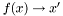

|
|
It is a start...
- That is my thought as I am preparing this release of the Adobe Source Libraries. There is some wonderful code here, and it is my hope that it will spark further research and development.
- If you look at the surface of a software product, what you will likely see is something mechanical. The illusion presented is that you are directly manipulating an underlying model: if you push here you know what will happen (or what should happen). If you push there, something else.
- Under the surface is a very non-mechanical system. Most implementations would be better described as "organic": a morass of objects loosely interconnected with messaging systems. The system is not random, it is likely carefully designed using any number of well established methodologies.
- The real architecture of the system, however, is the structure formed by the individual datum and logical interconnections. Software is defined on algebraic structures.
- This theme is recurrent throughout ASL and is reflected in many aspects, including:
- The reliance on value semantics, rather than reference or pointer semantics, as the mechanism to control connections.
- Stating the requirements of algorithms in terms of semantic concepts rather than interfaces.
- Making connections explicit and using explicit data structure, notable in the lack of inheritance as a coupling mechanism.
It is a good start...
- As these libraries are incorporated into Adobe's products they will replace tens of thousands of lines of code with simple and short declarations. The Eve layout engine has already saved Adobe significant man effort in localization.
- The most ambitious library, Adam, stems from the intuition that the logic behind a simple human interface can be distilled to a function:
- 
- The code providing this functionality accounts for a third of Adobe's code base and nearly half of the bugs found during development. Obviously these functions are not so simple, at least not as currently expressed. The apparent complexity is due to a high degree of interconnected variables. Event handling code alone does not have enough context for solving such systems.
There is still much to do...
- I have found that the better my understanding of the problem and solution, the simpler the code becomes. Conversely, each insight also brings more to do. Within each small library, a new body of work opens up. To illustrate:
- The full_order_iterator in adobe::forest is not an iterator at all. It needs to be reconsidered as a new category of "visitor". I believe there is some overlap here with iterating N-dimensional containers and containers composed of segments (i.e. a deque). The related notion of a segmented iterator also appears in the implementation of adobe::circular_queue. There is some significant and needed work on algorithms for segmented sequences and formalizing the concepts for segmented iterators and non-sequential visitors.
- If this foreword sounds somewhat apologetic this is why. I would love to release ASL as a completed work, but I know that there will always be work remaining.
- Still, I am convinced that writing correct, high performance, and feature rich systems can be orders of magnitude simpler than it currently is. By my estimate, 70% of Adobe's current code base could be better represented declaratively. The remaining imperative logic could be largely generic - reused both within and across Adobe's applications. Realizing even a fraction of this potential would open up a world of opportunities. I strongly suspect the proportions are similar throughout the industry.
- Why would Adobe give such technology away? The answer is twofold. First, we want to give back to the wonderful open source community which gives us so much. Second, we are releasing ASL because we want these problems to be solved. We want to be able to see our designs turned into quality products. We believe that technology that helps us build better products will make us a stronger company. We want to build Photoshop and Acrobat and not struggle with the small implementation details. And we realize the problem is far larger than us alone.
- If you are reading this I hope you find a use for these libraries, be it large or small. When you are writing your code please keep my above thoughts in mind; maybe even contribute something back to the effort. Lastly, if you are a software researcher in industry or academia, it is my hope that you will find some open territory here to explore.
It is a start...
In Gratitude
- I would be remiss without thanking a number of people for their efforts in putting together this library. Any ranking would be unfair, so I list them here in some kind of lexicographical order.
- Boost - ASL relies heavily on the Boost libraries and freely borrows ideas and techniques pioneered by the many great Boost contributors. Feel free to borrow back.
- Foster Brereton, who has been my wingman working on ASL and Eve before there was ASL. This release would not have happened without him.
- Greg Gilley, my boss, who has provided shelter for the Software Technology Lab and the support necessary to make this happen.
- Grant Munsey, who opened the doors at Adobe to open source. We hope you continue to get better.
- Martin Newell, whose Boxes program sparked the idea that led to Eve and whose support gave me time to explore countless iterations of Adam.
- The Photoshop team, especially Andrew Coven, Scott Byer, Joe Ault, and (ex-Photoshop member) Mark Hamburg. They have listened to me ramble incoherently for countless hours as I have struggled to form the ideas expressed here.
- Bob Pierce, who authored each of the Adobe open source licenses.
- Alex Stepanov who, more than anyone, has shaped how I think about software. Initially, through his work on the Standard Template Library. Now, as a personal friend and colleague he pushes me to learn more and to seek real problems and solutions. His constant pushing has transformed my code from a hack to less of a hack. It is a start.
- Bjarne Stroustrup, the C++ Standards Committee, and the C++ community, who provided a language with which I can attempt to express my ideas.
- Those that have taken the time to review and contribute to ASL including, Doug Ahmann, Bob Archer, Eric Berdahl, Florin Trofin, Tony Van Eerd, John Yen.
- My wife, Tricia, for her loving support.
- And of course, thanks to anyone whom I have somehow forgotten and to you for your interest.
Sean Parent
February 25, 2005
|